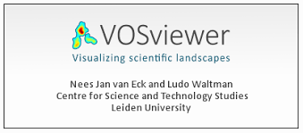
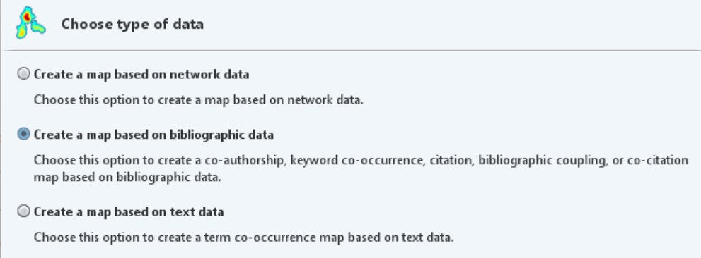
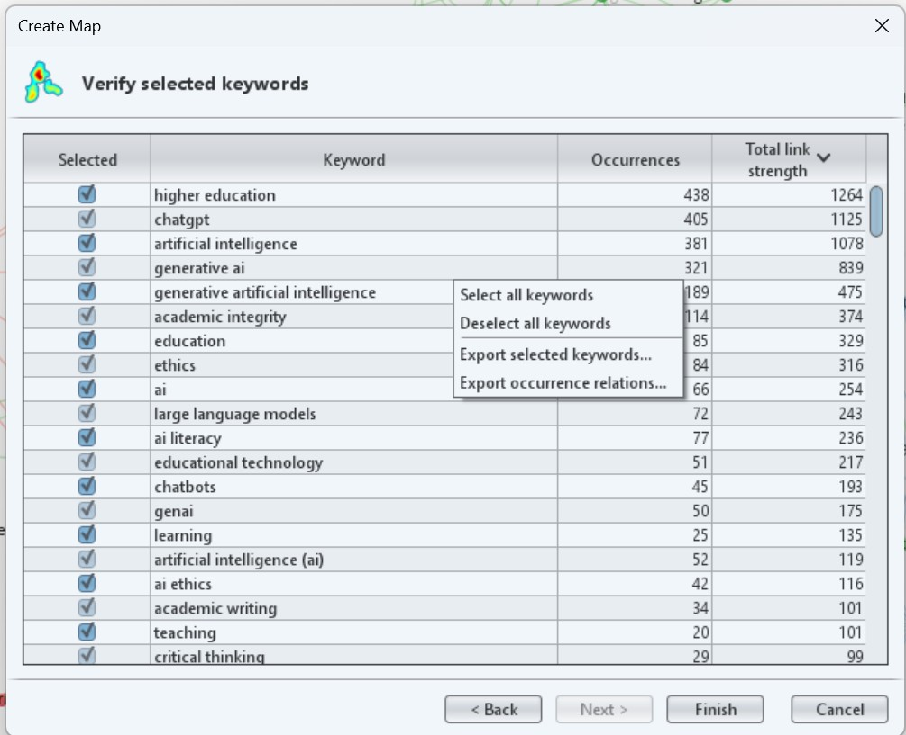
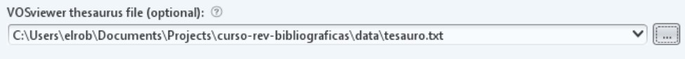

B VOSviewer: Visualización temática

VOSviewer es una herramienta gratuita desarrollada por el Centre for Science and Technology Studies (CWTS) de la Universidad de Leiden para la construcción y visualización de redes bibliométricas. Permite representar visualmente la estructura intelectual de un campo de investigación a partir de los metadatos de un corpus bibliográfico.
A diferencia de NotebookLM, que analiza el contenido de los textos, VOSviewer analiza las relaciones entre elementos bibliométricos: términos, autores, revistas, referencias. Es una herramienta complementaria, no alternativa.
Descarga gratuita: vosviewer.com
VOSviewer puede construir varios tipos de redes. Para este curso nos centraremos en la más útil para revisiones en ciencias sociales:
Co-ocurrencia de términos. Establece relaciones entre términos en base a las veces que aparecen de manera conjunta en distintos documentos.
Co-autoría. Permite analizar redes de colaboración entre autores en base a su co-ocurrencia en distintos documentos.
Co-citación. Dos artículos estarán relacionados entre sí si son citados con frecuencia de manera conjunta en otros trabajos.
Acoplamiento bibliográfico: Dos artículos estarán relacionados entre sí, si tienden a citar en su listado de referencias los mismos trabajos.
B.1 Importación de datos en VOSviewer
VOSviewer trabaja con datos bibliográficos y texto en distintos formatos. Puede trabajar con tres tipos de ficheros esencialmente:
- Ficheros extraídos desde una base de datos bibliográfica. Soporta bases de datos tipo Web of Science, Scopus, OpenAlex o Dimensions entre otras. En algunos casos incluso permite trabajar directamente desde la API de la base de datos.
- Ficheros exportados de un gestor bibliográfico. También permite trabajar con ficheros en formato .ris o .bib extraídos por ejemplo, de Zotero.
- Texto plano. Para mapas de co-palabras se puede trabajar directamente con ficheros de texto donde cada línea representa un documento.
B.1.1 Nuestro set de datos
Para esta pequeña práctica he preparado un set de datos de 1360 documentos extraídos de la Web of Science y relacionados con el uso responsable de la IA en el entorno universitario. Esta es la estrategia de búsqueda que he empleado:
(generative AI OR ChatGPT OR LLM) AND ("higher education" OR universit*) AND (ethic* OR “pedagogy”)📂Descarga del primer fichero - 📂Descarga del segundo fichero
Una vez descargados, toca cargarlos en VOSviewer:
Abre el programa y dale a la opción
Create, en el menú de la izquierda.En el menú que aparece, selecciona la opción
Create a map based on bibliographic datay luegoRead data from bibliographic database files.
Finalmente, carga los dos ficheros de manera conjunta utilizando el atajo
Ctrldel teclado.
B.1.2 Creación de un mapa de co-ocurrencia de términos
Analiza con qué frecuencia dos términos aparecen juntos en los títulos y/o abstracts del corpus. Los términos que co-ocurren frecuentemente aparecen próximos en el mapa y forman clusters temáticos — agrupaciones de conceptos que tienden a aparecer juntos en la literatura.
Para qué sirve: identificar los grandes temas del campo, detectar subtemas emergentes y visualizar la estructura conceptual de la literatura sobre
- Selecciona tipo de análisis: Co-occurrence → All keywords (o Title and abstract words)
- Establece un umbral mínimo de ocurrencias (nosotros trabajaremos con la opción por defecto)
- VOSviewer mostrará cuántos términos cumplen el umbral → Una vez confirmemos, creará el mapa
Muy importante: Como habrás observado, los términos que más veces aparecen y controlan la red son los que empleé en la estrategia de búsqueda. Esto puede ser problemático, al distorsionar la red. Para evitar esto, podemos deseleccionar estos términos antes de crear el mapa.
B.2 Creación de un tesauro y limpieza de datos
Este paso es imprescindible y frecuentemente omitido. VOSviewer extrae todos los términos que superan el umbral, pero muchos de ellos son irrelevantes: artículos, preposiciones, términos genéricos (study, analysis, results, paper) o variantes del mismo concepto (student / students).
B.2.1 Limpieza manual
VOSviewer genera un listado de todos los términos seleccionados. Antes de visualizar, se puede desactivar los términos irrelevantes desmarcando la casilla correspondiente.
Términos que habitualmente conviene desactivar: - Términos muy genéricos: study, research, analysis, result, paper, approach - Variantes de términos ya incluidos: si está student, desactivar students - Términos que corresponden al propio tema de búsqueda y aparecerán en todo el corpus
B.2.2 Limpieza asistida por LLM (VOSviewer)
Para corpus grandes con centenares de términos, exportar la lista de términos como CSV y usar un LLM para sugerir cuáles eliminar o unificar:
Tengo una lista de términos extraídos automáticamente de los títulos
y abstracts de un corpus bibliográfico sobre [TEMA A ANALIZAR].
Necesito limpiarla antes de visualizar la red de co-ocurrencias.
Por favor, identifica:
1. Términos genéricos que no aportan información temática
2. Variantes del mismo concepto que deberían unificarse
3. Términos que parecen errores de extracción
Lista de términos:
[PEGAR LISTA]El LLM sugiere; el investigador decide. Algunos términos que el modelo propone eliminar pueden ser relevantes en el contexto específico del campo.
B.2.3 Creación de un tesauro
Antes de crear el mapa, es posible añadir un tesauro elaborado por nosotros. Este tesauro sirve realmente para unificar términos sin tocar los datos brutos de nuestro fichero. El tesauro debe ser un fichero txt con dos columnas separadas por tabulador:
label.Incluye el término original de nuestro set de datos
replace by. Incluye el término normalizado
Para crear una tesauro, hay que extraer primero todos los términos que ha generado VOSviewer. Para ello, cuando te muestra VOSviewer el listado de términos, pincha con el botón derecho y en la opción Export selected keywords y guardalo en un txt.

Después, puedes adjuntar este fichero a un chatbot tipo ChatGPT, Gemini o Claude y lanzar el siguiente prompt:
Actúa como un experto en bibliometría. Te voy a pasar una lista de palabras clave extraídas de VOSviewer. Tu tarea es crear un archivo de tesauro. Identifica términos que significan lo mismo (ej: 'artificial intelligence' y 'ai', o 'chatgpt' y 'chat-gpt') y variaciones de plural/singular.
Dame el resultado exclusivamente en una tabla con dos columnas:
label: el término original.
replace by: el término único por el que se debe sustituir.
Mantén los términos técnicos académicos más precisos.Guarda los resultados en un txt y vuelve a crear el mapa. En el momento de elegir el tipo de mapa, añade tu nuevo tesauro en el apartado correspondiente:

B.3 Interpretación de clusters
Una vez limpio el mapa, VOSviewer muestra los términos agrupados en clusters codificados por color. Cada cluster representa una constelación temática — un conjunto de conceptos que tienden a aparecer juntos en la literatura.
B.3.1 Cómo leer el mapa
- Proximidad: cuanto más cercanos dos términos, más frecuentemente co-ocurren.
- Tamaño del nodo: cuanto más grande, más frecuente es ese término en el corpus.
- Color: indica el cluster al que pertenece el término (asignado automáticamente por el algoritmo).
- Distancia entre clusters: clusters alejados entre sí representan subtemas relativamente independientes.
B.3.2 Nombrar los clusters
VOSviewer no nombra los clusters — esa es tarea del investigador. Para nombrar cada cluster:
- Identificar los 3-5 términos con nodos más grandes dentro del cluster
- Leer algunos de los artículos más representativos de ese cluster
- Proponer un nombre que capture la orientación temática del conjunto
B.3.3 Fortalezas del análisis de co-ocurrencia
- Permite visualizar la estructura temática de un campo de forma rápida
- Identifica subtemas que podrían no ser evidentes en una lectura lineal
- Útil para detectar términos puente entre clusters (posibles áreas interdisciplinares)
- Reproducible: dado el mismo corpus y los mismos parámetros, el mapa es el mismo
B.3.4 Limitaciones del análisis de co-ocurrencia
- Depende de la calidad de los abstracts y palabras clave: si los datos son pobres o inconsistentes, el mapa lo reflejará.
- No captura el significado: dos términos pueden co-ocurrir porque se contrastan, no porque estén relacionados positivamente.
- Sensible al corpus: pequeños cambios en el corpus (añadir o quitar 50 referencias) pueden cambiar significativamente la estructura de los clusters.
- El algoritmo de clustering es automático: los clusters son una aproximación estadística, no categorías conceptuales establecidas.
- Sesgo hacia términos en inglés: si el corpus mezcla idiomas, los términos en español o en otros idiomas quedarán subrepresentados.
B.4 Otras herramientas similares: análisis avanzados
También en VOSviewer existen análisis más avanzados que quedan fuera del alcance de este curso:
- Overlay maps: mapas que añaden una variable temporal (año de publicación) o de impacto (número de citas) al mapa de co-ocurrencias, permitiendo visualizar la evolución del campo.
- Edición manual de clusters: reagrupación manual de nodos para ajustar la clasificación automática.
- Análisis de co-citación y acoplamiento bibliográfico: para identificar la estructura intelectual del campo con mayor precisión.
Estos análisis se desarrollarán en sesiones posteriores para quienes quieran profundizar en el análisis bibliométrico. (Bibliometrix se presenta en el Bloque 3; aquí puedes ampliar con el detalle práctico si lo necesitas.)